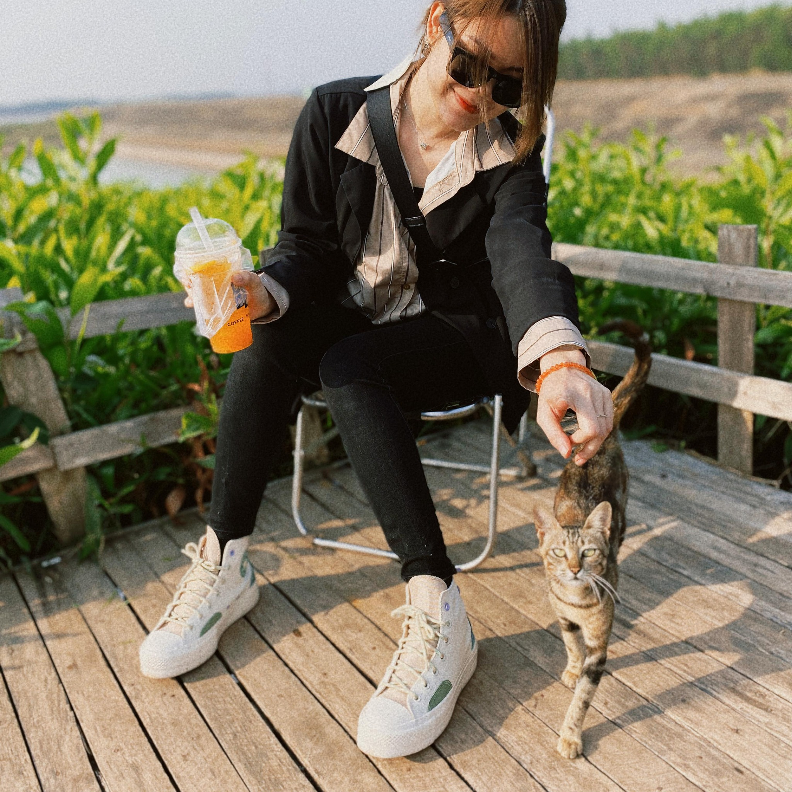

Name: Dr. Abraham Aldaco
Email: aaldaco@iastate.edu
Office: 0111 Durham Center
Biolography: Ph. D. in Computer Science from the Arizona State University.... Experience in applied statistics, design of experiments (DOE), machine learning (ML), simulation, modeling, data structures, networking, software development and testing. He has worked at TEC de Monterrey Mexico, Arizona State University (ASU), Center for Research in Physics (UNISON), IBM, General Electric, Intel and independent consultant.
Email: aaldaco@iastate.edu
Office: 0111 Durham Center
Biolography: Ph. D. in Computer Science from the Arizona State University.... Experience in applied statistics, design of experiments (DOE), machine learning (ML), simulation, modeling, data structures, networking, software development and testing. He has worked at TEC de Monterrey Mexico, Arizona State University (ASU), Center for Research in Physics (UNISON), IBM, General Electric, Intel and independent consultant.
Name: Dai Tran
Email: daitran@iastate.edu
Major: Software Engineering
 My LinkedIn
About me: My name is Dai Tran, and I am a senior Software Engineering student
at... Iowa State University.
Throughout my academic journey, I have developed coding skills, particularly in Java and C,
and gained experience in building websites. I am very excited to learn more skills and apply them
to the project.
My LinkedIn
About me: My name is Dai Tran, and I am a senior Software Engineering student
at... Iowa State University.
Throughout my academic journey, I have developed coding skills, particularly in Java and C,
and gained experience in building websites. I am very excited to learn more skills and apply them
to the project.
Email: daitran@iastate.edu
Major: Software Engineering

Name: Lan Tran
Email: lktran@iastate.edu
Major: Computer Science
My LinkedIn
About me: My name is Lan Tran, and I am currently pursuing a Bachelor of Science in...Computer Science.
I have always wanted to explore various aspects of web development, also making my personal website
in purpose to perform the result of studying it. As a Computer Science major, I have gained a strong foundation
in programming and software development. My focus is on building efficient, user-friendly web applications.
Before taking COMS319, I had a fair knowledge of front-end technologies such as JavaScript, HTML, and CSS, and various ideas,
which encouraged me to go deep into web development and work out a project. I am very excited to
learn more skills and apply them to the project.
Email: lktran@iastate.edu
Major: Computer Science